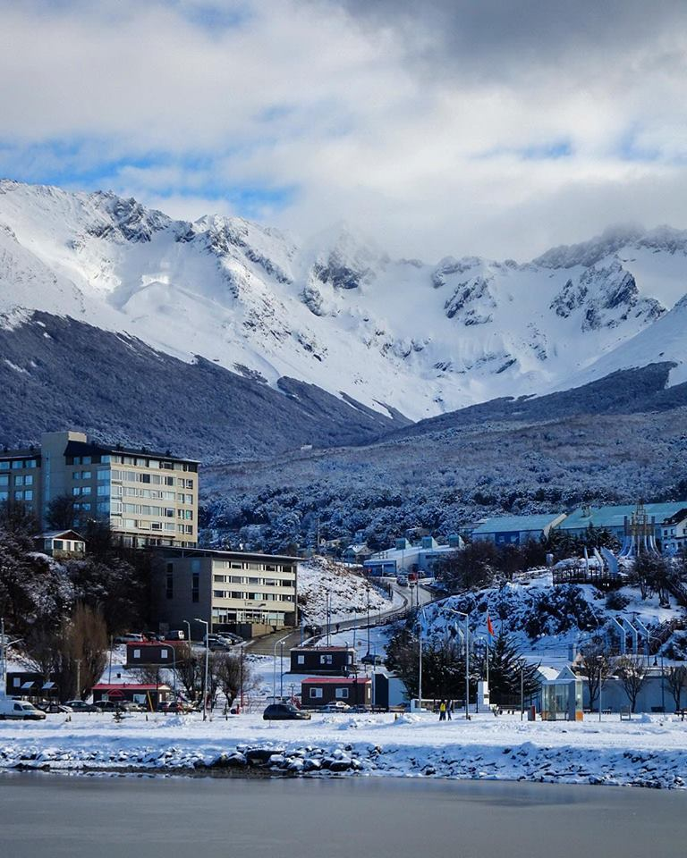
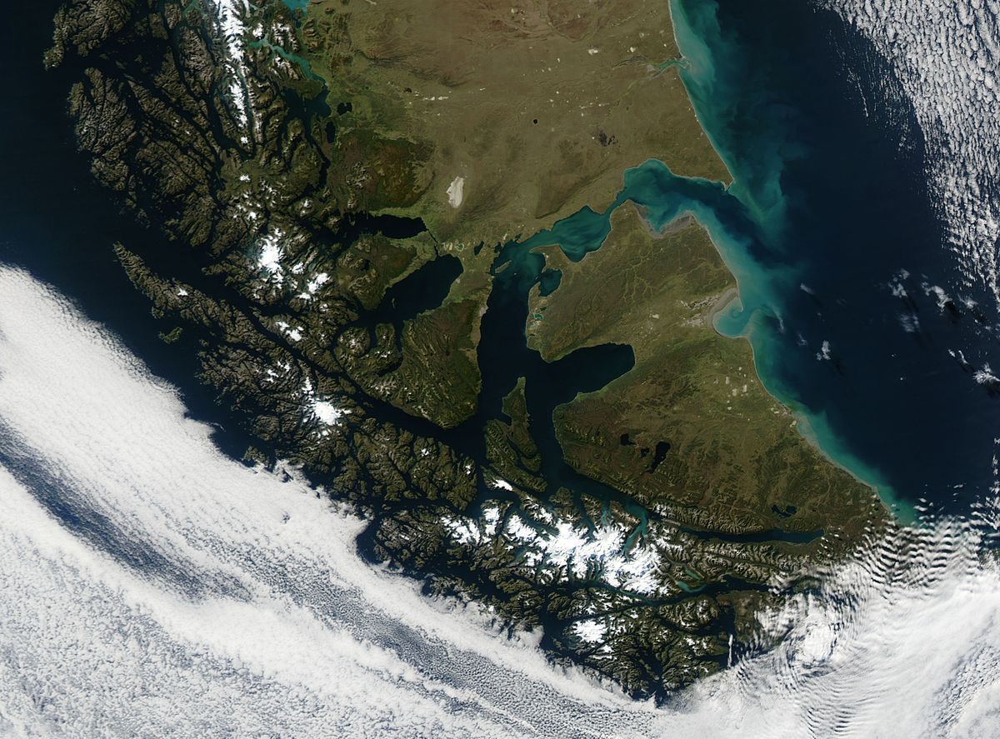

Contenidos de la pagina:
Brebe descripcion
La Historia De Tierra Del Fuego
Limites De La Provincia
Govierno en Tierra Del Fuego
Ver climas de esta zona
Explora su Economia Y Poblacion
Ushuaia
al otro lado de la
Cordillera", se extiende a lo largo de la costa del Canal Beagle, entre los ríos Olivia al este y Pipo al
oeste,
con la cadena montañosa Martial a sus espaldas.
es una ciudad turística por sus paisajes imponentes, con un puerto natural de aguas profundas, el más
cercano a
la Antártida, con hermosos lugares completamente vírgenes a apenas minutos del centro urbano.
por sus antiguas casas de madera y chapa metálica con techos de marcado declive, para evitar la acumulación
de
nieve. En su calle principal, San Martín, paralela a la costa del canal, elegantes comercios ofrecen
artículos
importados al cada vez más nutrido número de visitantes, convirtiéndose en "la ciudad más austral del
mundo".
Clima
La región esta dividida en dos zonas climáticas y atmosféricas que corresponden según su relieve. En la parte
cordillerana reina casi siempre el mal tiempo, las precipitaciones son copiosas y el cielo esta
permanentemente
nublado.
La región pampeana (Nor-Noreste) tiene una atmósfera m s seca y fría con cielo más limpio. El
viento
sopla con mayor violencia y la temperatura es m s inestable. En líneas generales se trata de un clima
marítimo.
La masa de agua no tiene mayores cambios de temperatura haciendo que esta sea m s o menos pareja durante
todo el
año. Ni muy fría en invierno , ni muy calurosa en verano. En latitudes similares del hemisferio norte la
situación es muy diferente; si tomamos por ejemplo a Hamburgo o Nueva York, con veranos calurosos e
inviernos
rigurosos.
Se puede afirmar que el clima es en general muy variado. Los fueguinos para sintetizar este
hecho
tienen un dicho que lo ejemplifica muy bien: " En un mismo día se pueden presentar las cuatro estaciones".
Es
cierto de una mañana lluviosa y nublada se puede pasar a un tibio día asoleado para que al rato algún
chubasco
con nevisca nos haga recordar donde estamos; y todo en el transcurso de la mañana.
Limites De La Provincia
Tierra del Fuego es una isla separada del continente americano por el Estrecho de Magallanes y su territorio
está
dividido entre la Argentina y Chile.
La superficie del sector argentino de la isla, que incluye Isla de los Estados, es de 21.571 kilómetros
cuadrados. La Provincia de Tierra del Fuego limita al Norte con el Estrecho de-
Magallanes, al Este con
el
Mar Atlántico, y al Oeste y al Sur con Chile y el Canal Beagle.
Dentro de la jurisdicción de la provincia, también se encuentran incluídas una zona de la Antár-
tida
reclamada por Argentina y un conjunto de islas ubicadas en el Atlántico Sur (Islas Malvinas, Georgias del
Sur, y
Sándwich del Sur).

Conoce Su Historia
Los primeros pobladores humanos de Tierra del Fuego fueron cazadores y recolectores nómades que dependían
de
los recursos terrestres existentes. Ocupaban lo que hoy es la Isla Grande, hace ya más de 10.000 años.
Llegaron desde el Norte, caminando, pues en ese momento la Isla Grande estaba todavía conectada con la
Patagonia Continental. El Estrecho de Magallanes se abrió a aguas oceánicas hace sólo unos 8.000 años.
Una
segunda oleada de poblamiento fue la de los nómades del mar. Estos llegaron por mar, navegando de isla
en
isla desde el Islario Occidental de Patagonia.
Se estima que su antigüedad máxima es de unos 6.500 años radiocarbónicos (si se transformase esta fecha
en
años calendáricos sería algo más antigua). A la llegada de los europeos a la región, la Isla Grande
estaba
ocupada por cazadores - recolectores cuya economía se centraba en los recursos terrestres, denominándose
a
sí mismos: selk'nam y haush. En tanto que las islas y canales que se extienden al Sur de la costa Norte
de
los Canales Beagle y Ballenero estaban ocupados por nómades del mar, cuya economía se basaba en el
aprovechamiento intensivo de los recursos marinos. Se denominaban a sí mismos: yámana y halakwoolip. Los
selk'nan son también conocidos como onas, los yámanas como yaganes y los halakwoolip como
alacalufes.
Del material hallado en las excavaciones hechas en los yacimientos de Marazzi, Tres Arroyos, Cabeza de
León,
Túnel y Lancha Packewaia, se han extraído restos fósiles y encontrado conchales que se pueden ver a lo
largo
de las costas del Canal Beagle. Así como también restos de utensilios realizados con material óseo, como
puntas de arpones, raspadores (área yámana), arcos, flechas y restos de pieles de animales cazados por
los
aborígenes (área selk'nam).
Economia Y Poblacion
El análisis socio-económico realizado confirma la hipótesis central de la investigación que aludía a que
“las
formas de ocupación del territorio están vinculadas estrechamente con las modalidades de producción,
dependientes de la base natural y ambiental del mismo territorio”.
El territorio en estudio sufrió
transformaciones vinculadas a las formas productivas ligadas históricamente al sector primario de la
economía y la extracción de recursos naturales definiendo con ello, un “estilo” de crecimiento y
apropiación
productivo. Este se ha definido por la aparición de sucesivas especializaciones productivas, todas las
cuales exceptuando la potencial industria turística, aparecen con períodos de auge y posterior
disminución
(y hasta desaparición) producto de la disminución de la base natural del recurso explotado y también y
sin
duda, a ciclos vinculados a fluctuaciones de los mercados respectivos.
Organizacion Politica
La provincia se encuentra dividida en 4 departamentos y utiliza el sistema de ejidos no colindantes para
sus
municipios y comunas, por lo que existen territorios no organizados en los espacios entre ellos,
pudiendo existir más de un municipio o comuna por departamento.
- Departamento Antártida Argentina
- Departamento Islas del Atlántico Sur
- Departamento Río Grande
- Departamento Ushuaia
El 18 de agosto de 1943 el presidente general Pedro P. Ramírez firmó el Decreto-ley N° 5626 por el que se
establecía:
“El Gobierno del Territorio Nacional de la Tierra del Fuego con la Isla de los
Estados
será ejercido por un Oficial Superior de la Armada, en servicio activo, nombrado por el Poder Ejecutivo
a
propuesta del Ministerio de Marina, con el título de Gobernador Marítimo del Territorio de la Tierra del
Fuego.”
El primer gobernador designado por las autoridades nacionales fue el teniente Félix
Mariano Paz, quien inició su mandato el 25 de noviembre de 1884.
Las principales Autoridades gubernamentales actuales son:
Governadora
En el período que comenzó en diciembre de 2007, la gobernación es ejercida
por
Fabiana Ríos, el vicegobernador es Roberto Crocianelli
Diputados
La Constitución Argentina en su artículo Nº 45 dice que la cantidad de
diputados de
cada provincia será de uno por cada treinta y tres mil habitantes o fracción no menor a dieciséis mil
quinientos. Los representantes de Tierra del Fuego en la Cámara de Diputados son cinco. En el período
2007-2011:
Nélida Belous, Mariel Calchaquí, Rubén Darío Sciuto. En el período 2009-2013: Rosana Bertone, Liliana Fadul.
Senadores
El artículo Nº 54 de la Constitución Argentina dice que el Senado se compondrá
de
tres senadores por cada provincia. Senadores del período que va desde el 10/12/2007 al 09/12/2013: José
Carlos
Martínez, María Rosa Díaz, Mario Jorge Colazo.
Legisladores
La Constitución Provincial en sus artículos Nº 89 y Nº 90 dice que el Poder
Legislativo lo ejercerán quince legisladores elegidos en forma directa y que durarán en su cargo cuatro
años,
pudiendo ser reelegidos. Esta cantidad será modificada si la cantidad de habitantes en la provincia supera
los
ciento cincuenta mil. En ese caso se agregará un cargo de legislador por cada diez mil habitantes, con un
límite
de veinticinco cargos en total.
Intendentes
El artículo Nº 180 de la Constitución Provincial dice que los municipios se
rigen
por la Ley Orgánica de Municipalidades:
Departamento legislativo: a cargo del Concejo Deliberante
compuesto
por siete miembros, que durarán cuatro años en sus funciones, pudiendo ser reelectos.
Departamento
ejecutivo:
a cargo de un Intendente que durará cuatro años en su cargo y podrá ser reelecto por un sólo período
consecutivo.
| Gobernador | Inicio | Fin |
|---|---|---|
| Miguel Ángel Castro | 4 de noviembre de 1997 | 10 de diciembre de 1997 |
| José Arturo Estabillo | 10 de diciembre de 1997 | 10 de enero de 2000 |
| Carlos Manfredotti | 10 de enero de 2000 | 10 de enero de 2004 |
| Mario Jorge Colazo | 10 de enero de 2004 | 2 de diciembre de 2005 |
| Hugo Cóccaro | 10 de septiembre de 2005 | 17 de diciembre de 2007 |
| Fabiana Ríos | 17 de diciembre de 2007 | 17 de diciembre de 2015 |
| Rosana Bertone | 17 de diciembre de 2015 | 10 de diciembre de 2019 |
| Juan Carlos Arcando | 10 de diciembre de 2019 | 17 de diciembre de 2019 |
| Gustavo Melella | 17 de diciembre de 2019 | En el cargo |